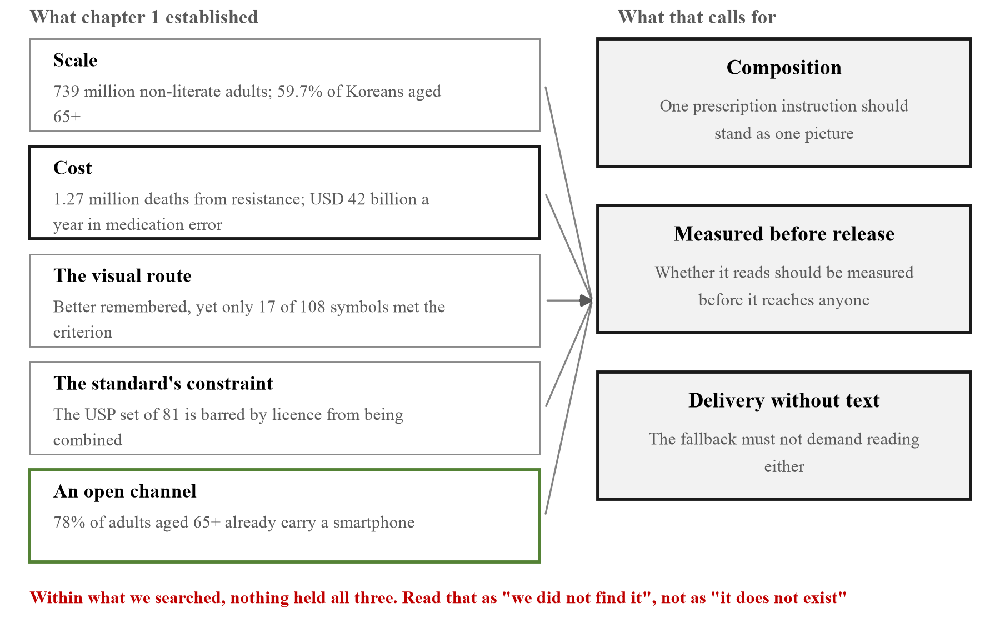
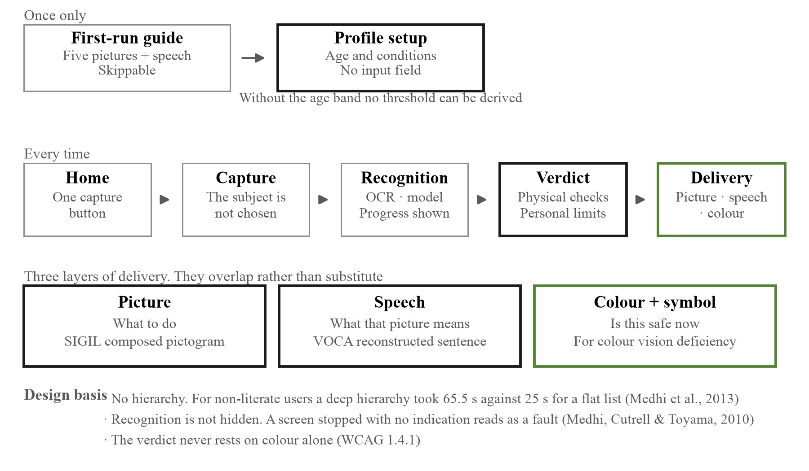
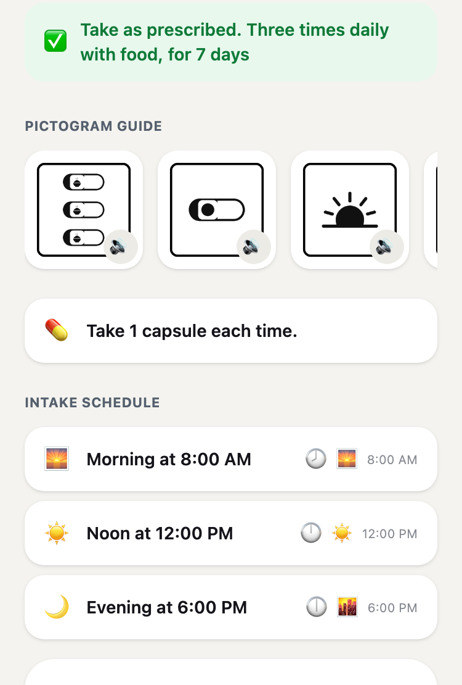
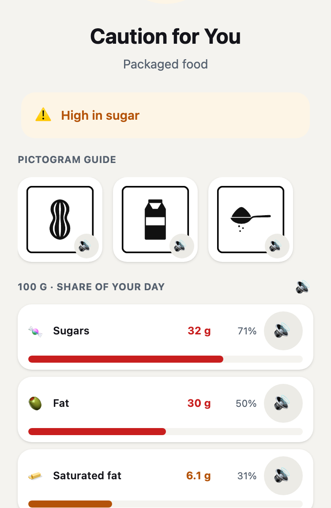
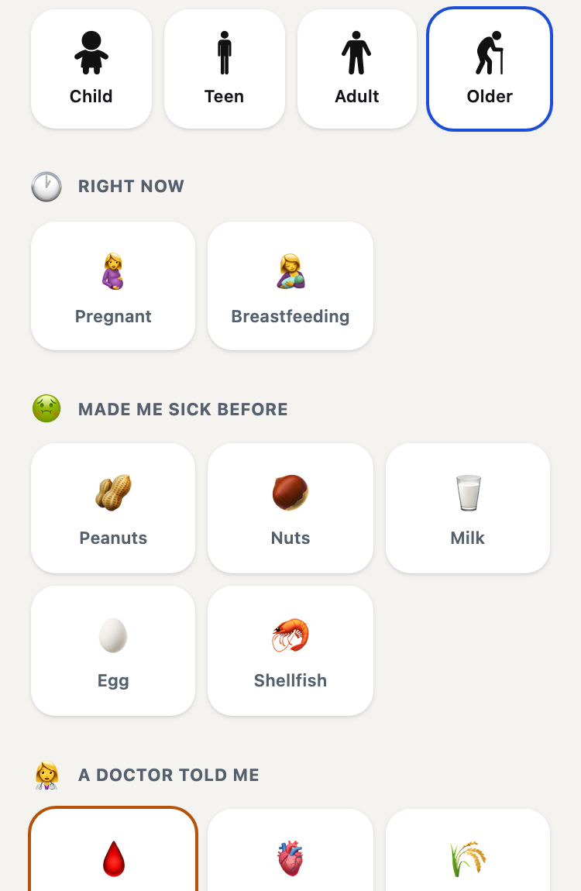

A prescription is written to be read. From the moment it is handed over everything depends on the patient's ability to read it, and for a large population that ability is absent or partial. Worldwide 739 million adults lack basic literacy skills, and even across 31 developed countries 18% of adults fall below the most elementary level of literacy, numeracy and adaptive problem solving.
The gap is wider within countries than between them. In Korea 39.6% of adults do not reach a sufficient level of health literacy; among those aged 65 and over it is 59.7%. Low health literacy is consistently associated with more hospitalisation, more emergency use and a reduced ability to take medicines correctly [2].
Removing text is necessary but not sufficient. For someone who cannot read a prescription a text interface is no different from the paper one. Yet pictures can fail to be read as well: in the Philippines only 17 of 108 pictograms reached the ANSI Z535.3 threshold among 52 adults [1], and a menu hierarchy is itself a barrier for low-literate users.
Existing pictogram sets are lists of pictures. A set of n drawings can say n things; an instruction not drawn in advance cannot be said at all. Their licences also state that pictograms must not be the sole means of conveying information, which is exactly the case this project has to serve.

At no point on the path to a judgement is the user required to read or type.
Two channels are laid so that neither leans on the other. The pictures alone, or the speech alone, must reach the same instruction. Text stays on screen for those who can use it, but the instruction has to survive without it.

SIGIL is built from morphemes and a grammar rather than from a list of drawings. A head stands on its own; a modifier cannot and goes into a slot inside a head. Five operators apply on top.
| Element | Count | Examples |
|---|---|---|
| Head | 57 | pill_bottle, dropper_bottle, allergen_peanut |
| Modifier | 21 | time_morning, qty_two, storage_fridge, body_eye |
| Operator | 5 | no{}, half{}, twice_daily{} and two more |
| Morphemes | 78 | composed, not selected |
The 78 were not chosen by drawing many pictures and thinking about combination afterwards. They were derived backwards from the distribution of medication error: dosage form and device 26, food 10, allergen 9, symptom 8, state 7, body site 6.
The output below is not written by hand. The prescription text is passed through the same path the camera uses and the resulting DSL is reproduced verbatim.
Amoxicillin capsules 250 mg — three times a day, 30 min after meals, 1 capsule, 7 days, refrigerate, not in pregnancy, no alcohol \three_times_daily{\capsule_strip{\food_bowl}} \capsule_strip{\time_morning} \capsule_strip{\time_noon} \capsule_strip{\time_evening} \capsule_strip{\qty_one} \capsule_strip{\storage_fridge} \finish_course \no_alcohol \state_pregnant \state_breastfeedingTen frames from one prescription. Four carry what was buried in the warning box in small print: finish the course, no alcohol, not in pregnancy, caution while breastfeeding.



Figure 3. What the user sees. Every element on all three screens can be pressed to be read aloud, and no screen asks for typed input.
VOCA does not read the extracted string aloud. A prescription holds a great deal the patient does not need and what they do need is scattered. Research on interactive voice response shows older users complete fewer tasks, the difficulty coming from ambiguous options, speech rate and option length [4]. The lesson taken was not "offer fewer options" but "remove steps"; the path to a verdict has none.
The verb follows the dosage form. A tablet is take, eye drops are put in, an ointment is apply. Once the form is known so is the body site, so the eye is composed together with the drops instead of being left out of the picture.
| What was measured | Result |
|---|---|
| Formative runs4 prescriptions × 7 user conditions, 6 items each | 27 / 28 passed all six0 / 28 before the fix |
| Semantic check of all 78 morphemes | 54 read as intended24 differently; the 7 exposed on screen were reworked |
| Nutrition model, Nutrition5k RGB split | 26.75% mean MAEn = 507, the deployed web.onnx |
| Offline with the server shut down | Normala missing service-worker cache entry was found and fixed |
The formative score is kept per item rather than reduced to one number. "27/28" alone leaves no way of knowing what failed. The single failure was item D5 under one condition and was left uncorrected rather than adjusting the scoring to fit.
| Target | Contribution |
|---|---|
| 3.4 | Thresholds derived from the individual's energy requirement; diabetes and hypertension narrow them |
| 3.8 | Reduces the literacy-driven gap at the self-management stage, after care ends |
| 3.d | Carries course completion as a picture, addressing the human route to antimicrobial resistance |
The list was built by surveying eight domains in parallel, recording a source URL for every entry and never inventing an address. Each person received a separate letter carrying an opaque token, so the server stores the token and only our own spreadsheet can say who answered.
Figure 4. Composition of the 39 respondents, as of 3 August 2026.
A prohibition is not read as a prohibition. Three respondents on three continents independently reported the same defect in the live demonstration.
The prescription read not to use the eyedrops in pregnancy while the pictogram showed a pregnant woman, making the patient assume it is safe to use in pregnancy. Prof. Atif Usman, The Islamia University of Bahawalpur, Pakistan
The engine already had a no{} operator that draws a prohibition ring and was
not applying it to contraindications. This is a critical confusion in the sense of ANSI
Z535.3. Fixing it uncovered the same accident running the other way: an avoid verdict was
wrapping every flag, so no_alcohol became \no{\no_alcohol} —
a slash through "do not drink" says that drinking is fine.
The premise itself was questioned. We had assumed that removing text lowers the barrier. One respondent inverted that.
To a non-literate person pictograms too can feel like letters. As the saying goes, "the black is the writing and the white is the paper." Prof. Heejung Seo, Dong-eui University, Korea
The comprehension studies we cite measured understanding after a picture was recognised as a picture. Whether it is recognised as a picture at all was never measured.
Our design could create a new risk. A pharmacist noted that a contraindication shown without a clinician present can void a prescription that was written knowingly.
Even a medicine that carries risk for pregnant women is sometimes prescribed after considering the patient's overall condition, and where the patient checks alone they may end up not receiving the drug therapy. Prof. So-Young Lee, pharmacist, Chungnam National University, Korea
A personalised verdict cannot beat a personalised prescription. This runs directly into the differentiator we had put forward, and 9 of the 13 pharmacists answered that a pharmacist should review every time.
| Question | Answer | n |
|---|---|---|
| Must a pharmacist review what the app produces?pharmacy, n = 13 |
Every time | 9 |
| Once at the start | 4 | |
| Where does it fail first for an older adult living alone?nursing, n = 9 |
Cannot operate the screen | 4 |
| Cannot keep the device going | 4 | |
| Patient or carer?nursing, n = 9 | Both, designed separately | 6 |
| Could it change health outcomes?nursing, n = 9 | Yes, if conditions are met | 8 |
The population was defined too loosely. Five respondents noted that the people they meet are more often visually impaired than non-literate, and one separated what we had been blurring: total blindness, low vision and low literacy are three groups, and pictograms address only the third.
One respondent argued the product may not be needed. An industry team leader wrote that Korean prescriptions already carry a barcode, that counselling is a legal duty with existing solutions, and that electronic prescriptions will make this redundant. Three of the five points do not hold outside Korea. Two we cannot answer, and they are recorded unanswered rather than argued away.
[1] Gutierrez, M. M., Patikorn, C. & Anantachoti, P. Evaluation of pharmaceutical pictogram comprehension among adults in the Philippines. J. Pharm. Policy Pract. 15:30 (2022).
[2] Berkman, N. D. et al. Low health literacy and health outcomes: an updated systematic review. Ann. Intern. Med. 155(2):97–107 (2011).
[3] Dowse, R. & Ehlers, M. S. The evaluation of pharmaceutical pictograms in a low-literate South African population. Patient Educ. Couns. 45:87–99 (2001).
[4] Miller, D. I. et al. Improving older adults' experience with interactive voice response systems. Telemed. e-Health 17(6):452–455 (2011).
[5] Korea Disease Control and Prevention Agency. Korea National Health and Nutrition Examination Survey, 9th cycle year 2 (2023). [6] ISO 9186-1:2014; ANSI Z535.3.